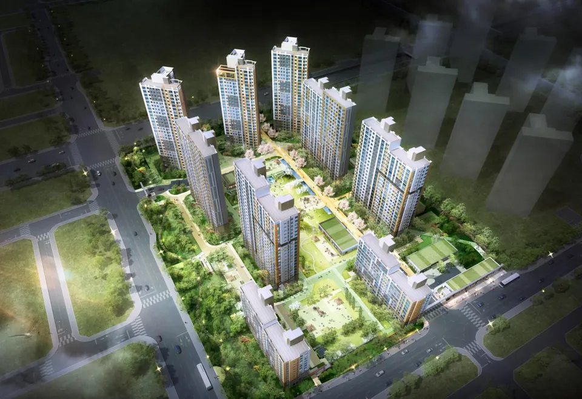
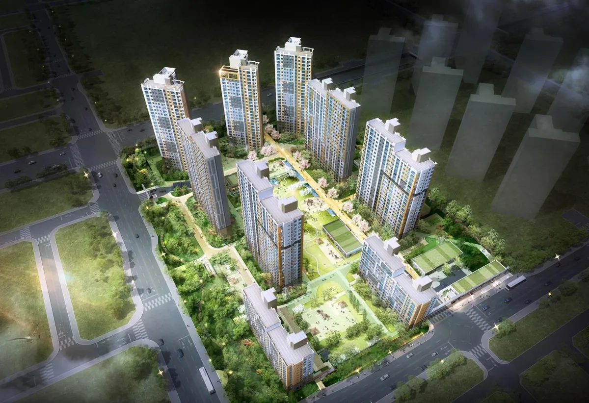
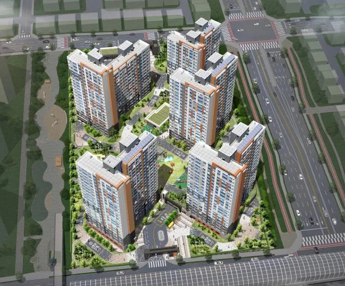
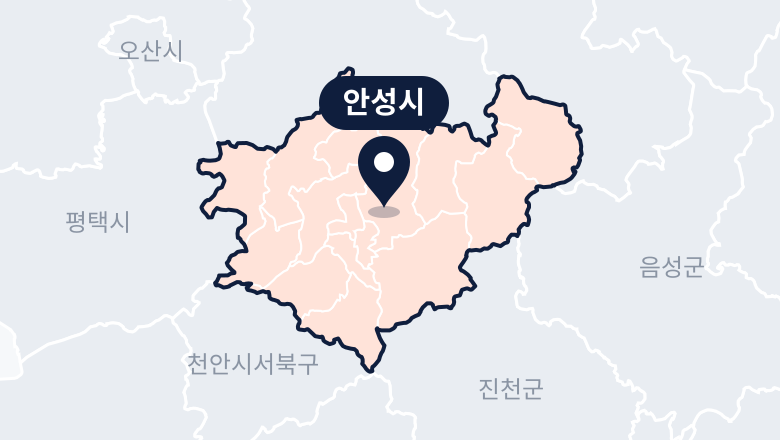

평택·안성 10년 공공임대 리츠 예비입주자 (5개 단지 396명) 보증금·월세
396세대 모집. 11.16(월) 접수, 보증금 5,343만2,000원·월 55만510원(안성아양 B-6 74A 기준 (가장 낮은 보증금)), 당첨자 발표 11.23(월).
경기도 평택시 비전4로 175 · 고덕국제2로 73 · 고덕갈평3로 50 / 경기도 안성시 아양로 73 · 아양로 61-19
- 보증금
- 5,343만2,000원
- 공급
- 396세대
- 예비입주자 · 안성아양 B-4 250 · 평택소사벌 B-2 77 · 안성아양 B-6 45 · 평택고덕 A-10 20 · 평택고덕 A-1 4
- 월세
- 55만510원
LH청약플러스 모집공고(11.5(목)) 원문 대조 · 최종 수정
3초 판단 평택소사벌 B-2 · 평택고덕 A-10·A-1 · 안성아양 B-4·B-6 (10년 공공임대 리츠) 한눈에 보기
- 월세월 48만원대~73만원대주변 시세의 약 40% (추정)좋음
- 자격수도권 무주택이면 통장 없이청약통장·소득·자산은 안 봐요 · 재당첨 제한 중인 세대는 안 돼요보통
- 살 수 있는 기간단지별 1년 미만~약 5년분양전환 예정 B-2 2027.10 · B-4 2028.3 · B-6 2029.8 · A-10 2030.1 · A-1 2031.11보통
- 보증금보증금 5,343만~9,674만원5,343만2천원(아양 B-6 74A) ~ 9,674만2천원(고덕 A-10 84A)보통
좋음·보통·주의는 줍줍알람 판정 기준대로 붙인 참고 표시예요. 숫자 근거는 아래 각 칸에 있어요.
넣을 만할까? 줍줍알람 한마디
통장·소득·자산을 안 보는 10년 공공임대 예비입주자 모집이라 수도권 무주택 세대면 문턱은 낮지만, 단지마다 살 수 있는 기간이 크게 달라요.
소사벌 B-2·아양 B-4는 분양전환이 가까워 계약해도 1~2년이 안 되고 갱신도 안 돼요. 지금 비어 있는 집도 고덕 A-1의 4호뿐이라 다른 타입은 순번을 받아도 오래 기다릴 수 있어요.
평택소사벌 B-2 · 평택고덕 A-10·A-1 · 안성아양 B-4·B-6 (10년 공공임대 리츠) 청약 일정
- 모집공고
- 인터넷·모바일 접수다음10~17시 하루 · 현장 접수 없음 · 접수가 모집 수보다 적어도 추가 접수는 안 받아요
- 서류제출 대상자 발표17시 이후 LH청약플러스·ARS 1661-7700
~ 서류 제출 (등기우편)LH 평택안성권주거복지지사, 11.30 우체국 소인까지- 예비입주자 확정자격 검증·소명이 끝난 뒤 개별 통보 (2027.1 예정)
평택·안성 10년 공공임대, 넣을 수 있을까요? 30초 체크
- 공고일(2026.11.5) 현재 서울·인천·경기에 주민등록이 돼 있다
- 만 19세 이상이고 세대원 모두 집(분양권 포함)이 없다
- 우리 세대는 재당첨 제한 기간 중이 아니다
- 넣으려는 단지의 기존 계약자(또는 그 세대원)가 아니다
- 11월 16일 10~17시에 인터넷이나 앱으로 접수할 수 있다
0 / 5개 '예'
5개 모두 '예'면 이번 예비입주자 모집의 신청 조건을 갖춘 거예요. 세부 기준은 모집공고로 확인하세요.
평택소사벌 B-2 · 평택고덕 A-10·A-1 · 안성아양 B-4·B-6 (10년 공공임대 리츠) 임대료 vs 주변 시세
주변 시세의 약 40% 수준(추정)
같은 안성 아양지구 광신프로그레스(옥산동, 2018년식) 전용 84㎡ 신규 월세 거래와 이 공고 안성아양 B-4 84A 조건을 월세끼리 비교했어요. 보증금은 이 공고가 4,585만원 더 많아서, 보증금을 월세로 바꿔 섞어 계산하지는 않았어요. 예비입주자가 가장 많은 안성아양 B-4 기준이에요.
국토교통부 실거래가 공개시스템 기준 · 추정치예요 (비교 방법)
입주할 때·매달 나가는 돈
돈을 넣으면 보증금이 되는지, 보증금을 바꾸면 월세가 얼마나 달라지는지 계산해요.
2년마다 갱신할 때 보증금·월세가 주택임대차보호법 범위 안에서 오를 수 있어요. 늦게 낸 잔금에는 연 6.5% 연체료가 붙어요.
보증금·월세는 LH 예비입주자 모집공고문(2026.11.5) 기준이에요. 보증금↔월세 전환은 공고문 전환요율(보증금을 늘릴 때 5%, 줄일 때 3.5%, 100만원 단위) 기준이고, 실제 요율은 입주 때 다시 정해져요. 관리비는 따로예요.
10년 공공임대가 국민임대·행복주택과 뭐가 다른지 궁금하면공공임대주택 종류별 자격·임대료·거주기간 →무주택 세대 기준이 헷갈리면무주택 세대 기준 정리 →청약 전 주의점 — 이건 알고 넣으세요
- 분양전환이 가까운 단지소사벌 B-2는 2027.10, 아양 B-4는 2028.3 분양전환 예정이라 지금 계약하면 남은 임대기간만 살고 갱신할 수 없어요.
- 조기분양전환은 대상 아님A-10·B-6은 조기분양전환이 진행 중이지만 이번 예비입주자는 대상이 아니고, A-1도 계약·입주 시점에 따라 빠질 수 있어요.
- 집 상태는 현재 그대로여러 번 입주·퇴거한 집이라 도배·바닥·가구가 낡았을 수 있고, 주택 개방 없이 현 상태대로 계약해요.
- 타입은 하나만1세대에 한 타입만 넣을 수 있고, 마감 뒤에는 바꿀 수 없어요. 세대원이 따로 넣어 하나라도 뽑히면 모두 무효예요.
타입·임대 조건
| 타입 | 대상 | 공급 | 보증금 · 월세 |
|---|---|---|---|
| 안성아양 B-4 74A | 예비 50명 | 50세대 | 5,375만7,000원월 54만3,070원 |
| 안성아양 B-4 84A | 예비 150명 | 150세대 | 6,585만원월 59만8,030원 |
| 안성아양 B-4 84B | 예비 50명 | 50세대 | 6,585만원월 60만9,030원 |
| 안성아양 B-6 74A | 예비 15명 | 15세대 | 5,343만2,000원월 55만510원 |
| 안성아양 B-6 84A | 예비 15명 | 15세대 | 6,530만6,000원월 60만9,880원 |
| 안성아양 B-6 84C | 예비 15명 | 15세대 | 6,530만6,000원월 60만9,880원 |
| 평택소사벌 B-2 74A | 예비 24명 | 24세대 | 6,798만원월 60만7,700원 |
| 평택소사벌 B-2 84A1 | 예비 16명 | 16세대 | 8,188만5,000원월 64만8,900원 |
| 평택소사벌 B-2 84B | 예비 2명 | 2세대 | 8,188만5,000원월 64만8,900원 |
| 평택소사벌 B-2 84A2 | 예비 35명 | 35세대 | 8,188만5,000원월 64만8,900원 |
| 평택고덕 A-10 84A | 예비 20명 | 20세대 | 9,674만2,000원월 72만5,570원 |
| 평택고덕 A-1 59A | 예비 2명 (지금 빈집 1호) | 2세대 | 5,505만1,000원월 48만5,740원 |
| 평택고덕 A-1 84B | 예비 2명 (지금 빈집 3호) | 2세대 | 9,283만1,000원월 73만4,010원 |
보증금의 20%(예: 안성아양 B-4 84A 1,317만원)는 계약할 때, 나머지 80%는 입주지정기간 안에 내요. 보증금은 100만원 단위로 바꿀 수 있어서, 안성아양 B-4 84A는 보증금을 최대 8,600만원 더 내면 월 23만9,690원, 보증금을 최대 4,800만원 줄이면 월 73만8,030원이 돼요(전환요율 5%·3.5%, 공고문 예시). 임대조건은 공고일 기준이라 계약할 때 바뀌어 있으면 바뀐 조건으로 계약해요.
신청 방법
- 인증서 준비공동인증서나 금융·네이버·토스·KB국민 인증서를 접수일 전까지 준비해요.
- 인터넷·모바일 접수LH청약플러스(apply.lh.or.kr) 또는 앱 → 청약 → 임대주택 → 청약신청하기에서 단지와 타입 하나를 골라요. 11.16(월) 10~17시 하루뿐이에요.
- 서류제출 대상자 확인11.23(월) 17시 이후 LH청약플러스 '청약결과확인'이나 ARS 1661-7700으로 직접 확인해요. 따로 연락이 오지 않아요.
- 서류 보내기11.24(화) ~ 11.30(월)에 등기우편으로 LH 평택안성권주거복지지사(평택시 정암로 10 아트타워 2층, 우 17783, 10년 공공임대주택 공급담당자 앞)에 보내요. 안 보내면 당첨이 취소돼요.
- 예비입주자 확정·계약자격 검증이 끝나면 개별 통보(2027.1 예정)하고, 빈집이 생기면 순번대로 연락해요. 동·호는 계약 때 전산 추첨으로 정해요.
주변 단지 실거래 비교
안성시 · 전용 0㎡ 안팎 · 최근 6개월(2026.06~2026.11)
보증금까지 합쳐 보면 주변의 약 135% (추정)
월세 가격 · 점선 = 주변 중앙값 55만원
- 월세 거래
- 200건
- 주변 월세 중앙값
- 55만원
- 주변 보증금 중앙값
- 1,622만원
보증금이 단지마다 달라서, 보증금을 연 4.5%로 월세에 더해(보증금 1,000만원 = 월 3만7,500원) 비교했어요. 이 공고는 환산 월 74만5,000원, 주변 비교 단지 중앙값은 환산 월 55만1,000원이에요(추정).
거래 내역 표로 보기
| 단지 (준공) | 면적 | 최근 보증금 / 월세 | 거래 | 6개월 거래 |
|---|---|---|---|---|
| 참아름2단지 (2008) | 49.5㎡ | 1,994만원 / 월 18만원 | 26.11 | 377건 |
| 참아름5단지 (2008) | 49.5㎡ | 1,994만원 / 월 18만원 | 26.11 | 196건 |
| 주은풍림 (2002) | 49.8㎡ | 1억700만원 / 월 15만원 | 26.11 | 137건 |
| 안성공도센트럴카운티아파트 (2023) | 84.9㎡ | 2억6,500만원 / 월 6만원 | 26.10 | 137건 |
| 주은청설 (2000) | 39.8㎡ | 7,200만원 / 월 15만원 | 26.11 | 106건 |
| 홍익 (2001) | 39㎡ | 500만원 / 월 50만원 | 26.11 | 67건 |
국토교통부 실거래가 공개시스템 (2026-11-13 조회) · 직거래·공공임대 단지 제외 · 면적·층·연식이 달라 실제 시세와 다를 수 있어요 (비교 방법)
평면도·면적
| 타입 | 전용면적 | 공급면적 |
|---|---|---|
| 안성아양 B-4 74A | 74.93㎡약 22.7평 | 99.45㎡약 30.1평 |
| 안성아양 B-4 84A | 84.91㎡약 25.7평 | 112.70㎡약 34.1평 |
| 안성아양 B-4 84B | 84.76㎡약 25.6평 | 112.50㎡약 34.0평 |
| 안성아양 B-6 74A | 74.94㎡약 22.7평 | 96.52㎡약 29.2평 |
| 안성아양 B-6 84A | 84.91㎡약 25.7평 | 109.36㎡약 33.1평 |
| 안성아양 B-6 84C | 84.93㎡약 25.7평 | 109.39㎡약 33.1평 |
| 평택소사벌 B-2 74A | 74.85㎡약 22.6평 | 98.75㎡약 29.9평 |
| 평택소사벌 B-2 84A1 | 84.97㎡약 25.7평 | 112.10㎡약 33.9평 |
| 평택소사벌 B-2 84B | 84.97㎡약 25.7평 | 112.10㎡약 33.9평 |
| 평택소사벌 B-2 84A2 | 84.98㎡약 25.7평 | 112.11㎡약 33.9평 |
| 평택고덕 A-10 84A | 84.95㎡약 25.7평 | 108.99㎡약 33.0평 |
| 평택고덕 A-1 59A | 59.93㎡약 18.1평 | 80.72㎡약 24.4평 |
| 평택고덕 A-1 84B | 84.73㎡약 25.6평 | 114.13㎡약 34.5평 |
단지 배치도
단지 둘러보기


위치·교통

경기도 평택시 비전4로 175 · 고덕국제2로 73 · 고덕갈평3로 50 / 경기도 안성시 아양로 73 · 아양로 61-19 (평택 소사벌·고덕국제신도시 · 안성 아양지구) · 네이버 지도에서 보기
신청 자격
- 거주지역
- 수도권(서울·인천·경기), 공고일 2026.11.5 기준
- 대상
- 만 19세 이상 무주택 세대원 (분양전환 때까지 무주택 유지)
- 청약통장
- 필요 없음
- 소득·자산
- 보지 않음
- 재당첨 제한
- 재당첨 제한 기간 중인 세대는 신청·계약 불가
- 신청 불가
- 5개 단지 기존 계약자와 그 세대원은 같은 단지 신청 불가 · 외국인 불가
- 신청 수
- 1세대 1개 타입만 (중복이면 전부 무효 · 부부가 둘 다 뽑히면 먼저 계약한 쪽만 유효)
- 순번 정하는 법
- 신청자 전원 전산 무작위 추첨
- 접수 방법
- 인터넷·모바일만
이런 분께 맞아요
이런 분이라면 볼 만해요
- 청약통장이 없거나 소득이 높은 수도권 무주택 세대통장·소득·자산을 보지 않고 추첨으로만 순번을 정해요.
- 평택고덕·안성아양에서 분양전환까지 살 생각이 있는 분분양전환 때까지 살고 무주택을 유지하면 우선 분양전환 자격이 생겨요.
이런 분은 다시 생각해 보세요
- 2년 넘게 살 집이 필요한데 소사벌 B-2·아양 B-4를 보는 분두 단지는 분양전환이 가까워 계약해도 임대기간이 1~2년 미만이고 갱신이 안 돼요.
- 입주 날짜가 정해져야 하는 분예비입주자라 빈집이 생겨야 순번대로 계약하고, 지금 빈집은 고덕 A-1의 4호뿐이에요.
- 11.16 낮에 접수하기 어려운 분하루 10~17시만 인터넷·모바일로 받고 현장 접수는 없어요.
공급 정보
- 시행
- 한국토지주택공사(리츠 자산관리회사)
- 문의
- 1600-1004
- 단지·분양전환 예정
- 평택소사벌 B-2 632세대 2027.10 · 안성아양 B-4 963세대 2028.3 · 안성아양 B-6 443세대 2029.8 · 평택고덕 A-10 719세대 2030.1 · 평택고덕 A-1 383세대 2031.11
- 임대기간
- 최초 임대 시작부터 10년 뒤 분양전환 · 2년 단위 갱신 · B-2는 계약하면 1년 미만, B-4는 2년 미만이라 갱신 불가
- 지금 빈집
- 평택고덕 A-1 59A 1호 · 84B 3호 (나머지 타입은 빈집이 생기면 순번대로)
- 분양전환 가격
- 감정평가 2곳 평균 · 분양전환 때까지 살고 세대 전원 무주택이어야 우선 분양전환 자격
- 조기분양전환
- B-2·B-4는 이미 끝남 · A-10·B-6은 진행 중이라 이번 예비입주자는 대상 아님 · A-1은 계약·입주 시점에 따라 대상이 안 될 수 있음
- 집 상태
- 여러 번 입주·퇴거한 집이라 도배·바닥·가구가 최초 입주 때와 다를 수 있고, 현 상태대로 계약 · 주택 개방은 하지 않아요
- 시행사
- (주)NHF 제1·3·10·16호 공공임대리츠 · 자산관리 LH (임대차계약은 리츠와 맺어요)
공식 공고문 확인
신청 전에 모집공고 원문을 꼭 확인하세요. 타입·계층별 보증금과 세부 자격은 공고문에 있어요.
LH청약플러스에서 공식 공고 보기자주 묻는 질문
평택 10년 공공임대 입주자격은?
공고일(2026.11.5) 현재 수도권에 사는 만 19세 이상 무주택 세대원이에요. 청약통장·소득·자산은 보지 않고, 재당첨 제한 기간 중인 세대는 안 되고, 기존 계약자 세대는 같은 단지를 다시 넣을 수 없어요.
안성아양 10년 공공임대 보증금과 월세는?
안성아양 B-4 84A는 보증금 6,585만원·월 59만8,030원, 74A는 보증금 5,375만7천원·월 54만3,070원이에요. B-6 84A·84C는 보증금 6,530만6천원·월 60만9,880원이에요.
평택 고덕 10년 공공임대 보증금은?
평택고덕 A-10 84A는 보증금 9,674만2천원·월 72만5,570원, A-1은 59A 5,505만1천원·월 48만5,740원, 84B 9,283만1천원·월 73만4,010원이에요.
예비입주자 순번은 어떻게 정하나요?
신청한 사람 전원을 전산으로 무작위 추첨해 순번을 정해요. 통장 가입 기간이나 저축액은 보지 않아요.
예비입주자는 언제 입주하나요?
빈집이 생기면 순번대로 연락해요. 지금 빈집은 평택고덕 A-1 59A 1호·84B 3호뿐이라, 다른 타입은 오래 기다릴 수 있어요. 분양전환이 시작되면 예비 지위는 자동으로 없어져요.
이번에 들어가도 분양전환 받을 수 있나요?
분양전환 때까지 살고 세대 전원이 무주택이면 우선 분양전환 자격이 생겨요. 다만 B-2·B-4는 조기분양전환이 끝났고 A-10·B-6 조기분양전환은 이번 예비입주자가 대상이 아니에요. 가격은 감정평가 2곳 평균으로 정해요.
평택 안성 공공임대 접수 방법은?
11.16(월) 10~17시에 LH청약플러스나 앱으로만 받아요. 1세대에 타입 하나만 넣을 수 있고, 마감 뒤에는 바꿀 수 없어요.
신청 전에 읽어볼 가이드
경기에서 곧 접수하는 공고
출처
LH청약플러스 10년 공공임대주택[리츠] 예비입주자 모집공고문 (모집공고일 2026.11.5(목)) 기준
자격·임대조건·분양전환 일정·선정 방법: LH 예비입주자 모집공고문(2026.11.5)
시세 비교 실거래: 국토교통부 실거래가 공개시스템 기준
지도: 통계청 SGIS 2018 행정구역 경계 (공공누리 제1유형)
최종 수정 · 내용이 다르면 오류 알려주기
정보 제공 목적이며 투자 권유가 아니에요. 신청 전 모집공고 원문을 꼭 확인하세요.